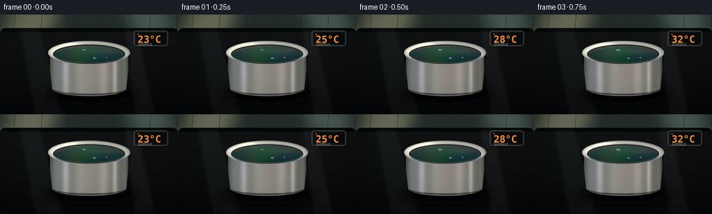
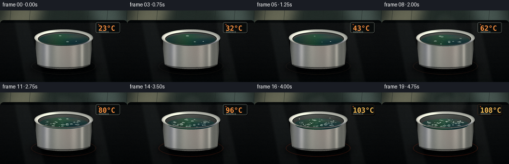
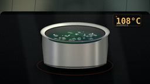
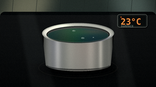
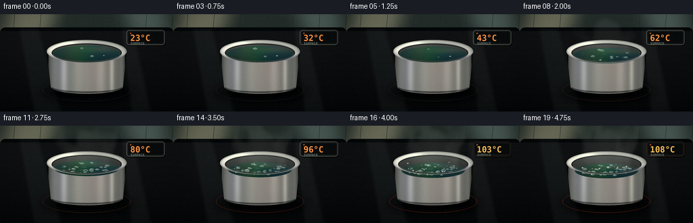

CODING AGENTS AS PIXEL WORLD MODELS
traex/DeepSeek-V4.1-Flash · phygen_106
点击播放 · 原生 RGB 像素
逐轮保存的候选
回放视频、检查图与代码变化。
每份候选均可单独播放。实际图片检查记录在下方工具轨迹中。
候选 01播放与检查图
点击播放 · 原生 RGB 像素


展开代码变化
--- 上一保存版本
+++ 本次保存版本
@@ -0,0 +1,456 @@
+from pathlib import Path
+import math
+
+import numpy as np
+from PIL import Image, ImageDraw, ImageFilter, ImageFont
+
+import artifact_io
+
+
+ROOT = Path(__file__).resolve().parent
+WIDTH, HEIGHT = 256, 144
+SCALE = 4
+W, H = WIDTH * SCALE, HEIGHT * SCALE
+FRAMES = 20
+FPS = 4.0
+
+
+def smoothstep(edge0, edge1, x):
+ x = np.clip((x - edge0) / (edge1 - edge0), 0.0, 1.0)
+ return x * x * (3.0 - 2.0 * x)
+
+
+def lerp(a, b, t):
+ return a + (b - a) * t
+
+
+def vertical_gradient(top, bottom):
+ y = np.linspace(0.0, 1.0, H, dtype=np.float32)[:, None, None]
+ top = np.asarray(top, dtype=np.float32)[None, None, :]
+ bottom = np.asarray(bottom, dtype=np.float32)[None, None, :]
+ return np.broadcast_to(top * (1.0 - y) + bottom * y, (H, W, 3)).copy()
+
+
+def ellipse_mask(cx, cy, rx, ry):
+ yy, xx = np.mgrid[0:H, 0:W]
+ return ((xx - cx) / rx) ** 2 + ((yy - cy) / ry) ** 2 <= 1.0
+
+
+def make_background():
+ image = Image.fromarray(vertical_gradient((42, 52, 49), (17, 22, 23)).astype(np.uint8))
+ draw = ImageDraw.Draw(image)
+
+ # A soft window reflection gives the steel something warm to pick up.
+ glow = Image.new("RGB", (W, H), (0, 0, 0))
+ gd = ImageDraw.Draw(glow)
+ gd.polygon(
+ [(48, 0), (334, 0), (250, 172), (0, 185)],
+ fill=(73, 66, 51),
+ )
+ gd.polygon(
+ [(730, 0), (980, 0), (1015, 132), (818, 154)],
+ fill=(42, 49, 48),
+ )
+ glow = glow.filter(ImageFilter.GaussianBlur(46))
+ image = Image.fromarray(
+ np.clip(np.asarray(image, dtype=np.int16) + np.asarray(glow, dtype=np.int16), 0, 255).astype(np.uint8)
+ )
+
+ draw = ImageDraw.Draw(image)
+ # Dark, narrow tile courses in the backsplash.
+ for x in (86, 242, 398, 554, 710, 866, 1022):
+ draw.line((x, 0, x - 9, 105), fill=(36, 44, 42), width=2)
+ draw.line((0, 102, W, 100), fill=(66, 72, 67), width=3)
+
+ # Induction cooktop glass.
+ cooktop = Image.new("RGB", (W, H), (10, 13, 14))
+ cd = ImageDraw.Draw(cooktop)
+ for i in range(90):
+ yy = 102 + i * 5
+ shade = int(12 + 10 * (1.0 - i / 90.0))
+ cd.line((0, yy, W, yy), fill=(shade, shade + 2, shade + 3), width=5)
+ mask = Image.new("L", (W, H), 0)
+ ImageDraw.Draw(mask).rounded_rectangle((0, 78, W, H + 30), radius=31, fill=255)
+ image = Image.composite(cooktop, image, mask)
+
+ # Broad oblique reflections on the glass.
+ reflection = Image.new("RGBA", (W, H), (0, 0, 0, 0))
+ rd = ImageDraw.Draw(reflection)
+ rd.polygon([(108, 80), (230, 80), (365, H), (198, H)], fill=(142, 156, 153, 17))
+ rd.polygon([(712, 80), (790, 80), (895, H), (772, H)], fill=(190, 202, 194, 13))
+ rd.line((0, 112, W, 109), fill=(181, 189, 181, 27), width=2)
+ reflection = reflection.filter(ImageFilter.GaussianBlur(10))
+ image = Image.alpha_composite(image.convert("RGBA"), reflection).convert("RGB")
+ return image
+
+
+def add_temperature_display(image, temperature, progress):
+ layer = Image.new("RGBA", (W, H), (0, 0, 0, 0))
+ d = ImageDraw.Draw(layer)
+ x0, y0, x1, y1 = 770, 94, 966, 181
+
+ d.rounded_rectangle((x0 + 4, y0 + 7, x1 + 4, y1 + 7), radius=16, fill=(0, 0, 0, 105))
+ d.rounded_rectangle((x0, y0, x1, y1), radius=16, fill=(15, 18, 18, 242), outline=(116, 124, 119, 230), width=3)
+ d.rounded_rectangle((x0 + 7, y0 + 7, x1 - 7, y1 - 7), radius=11, outline=(48, 55, 53, 255), width=2)
+ d.rounded_rectangle((x0 + 20, y0 + 15, x0 + 28, y0 + 23), radius=3, fill=(215, 99, 45, 230))
+
+ font = ImageFont.truetype("/usr/share/fonts/truetype/dejavu/DejaVuSansMono-Bold.ttf", 56)
+ label_font = ImageFont.truetype("/usr/share/fonts/truetype/dejavu/DejaVuSansCondensed-Bold.ttf", 18)
+ text = f"{int(round(temperature))}\u00b0C"
+ color = (255, 148, 72, 255) if temperature < 100 else (255, 192, 94, 255)
+ bbox = d.textbbox((0, 0), text, font=font)
+ tx = x0 + 22
+ ty = y0 + 27 - bbox[1]
+ d.text((tx, ty), text, font=font, fill=color)
+ d.text((x0 + 24, y0 + 68), "SURFACE", font=label_font, fill=(104, 118, 113, 225))
+
+ glow = Image.new("RGBA", (W, H), (0, 0, 0, 0))
+ gd = ImageDraw.Draw(glow)
+ gd.text((tx, ty), text, font=font, fill=(255, 108, 39, 155))
+ glow = glow.filter(ImageFilter.GaussianBlur(8))
+ layer = Image.alpha_composite(glow, layer)
+
+ if temperature >= 100:
+ pulse = 0.55 + 0.45 * math.sin(progress * math.pi * 6.0)
+ d = ImageDraw.Draw(layer)
+ d.rounded_rectangle((x0, y0, x1, y1), radius=16, outline=(221, 105, 52, int(95 * pulse)), width=3)
+ return Image.alpha_composite(image.convert("RGBA"), layer).convert("RGB")
+
+
+def add_shadow_and_ring(image, progress):
+ layer = Image.new("RGBA", (W, H), (0, 0, 0, 0))
+ d = ImageDraw.Draw(layer)
+ d.ellipse((240, 398, 790, 524), fill=(0, 0, 0, 130))
+ layer = layer.filter(ImageFilter.GaussianBlur(28))
+ image = Image.alpha_composite(image.convert("RGBA"), layer).convert("RGB")
+
+ ring = Image.new("RGBA", (W, H), (0, 0, 0, 0))
+ rd = ImageDraw.Draw(ring)
+ heat = float(smoothstep(0.0, 1.0, progress))
+ ring_color = (
+ int(lerp(91, 214, heat)),
+ int(lerp(86, 76, heat)),
+ int(lerp(76, 42, heat)),
+ int(lerp(72, 122, heat)),
+ )
+ rd.ellipse((252, 380, 772, 516), outline=ring_color, width=4)
+ rd.ellipse((279, 394, 745, 503), outline=(117, 120, 112, 43), width=2)
+ ring = ring.filter(ImageFilter.GaussianBlur(1.5))
+ return Image.alpha_composite(image.convert("RGBA"), ring).convert("RGB")
+
+
+def draw_pot_body(image):
+ yy, xx = np.mgrid[0:H, 0:W]
+ body_mask_img = Image.new("L", (W, H), 0)
+ bd = ImageDraw.Draw(body_mask_img)
+ bd.polygon([(277, 220), (747, 220), (726, 430), (300, 430)], fill=255)
+ bd.ellipse((277, 153, 747, 287), fill=255)
+ bd.ellipse((300, 386, 726, 470), fill=255)
+ body_mask = np.asarray(body_mask_img, dtype=np.float32) / 255.0
+
+ xn = (xx - 512.0) / 236.0
+ yn = np.clip((yy - 204.0) / 245.0, 0.0, 1.0)
+ steel = (
+ 0.19
+ + 0.17 * np.exp(-((xn + 0.82) / 0.13) ** 2)
+ + 0.37 * np.exp(-((xn + 0.57) / 0.085) ** 2)
+ + 0.10 * np.exp(-((xn + 0.22) / 0.13) ** 2)
+ + 0.18 * np.exp(-((xn - 0.36) / 0.11) ** 2)
+ + 0.41 * np.exp(-((xn - 0.63) / 0.055) ** 2)
+ + 0.15 * np.exp(-((xn - 0.88) / 0.055) ** 2)
+ )
+ steel *= 0.88 + 0.16 * np.sin(yn * math.pi)
+ steel *= 0.96 + 0.025 * np.sin(xx * 1.37) + 0.018 * np.sin(xx * 4.3 + yy * 0.17)
+ steel = np.clip(steel, 0.0, 0.9)
+
+ body = np.empty((H, W, 3), dtype=np.float32)
+ body[..., 0] = 102 + steel * 148
+ body[..., 1] = 108 + steel * 142
+ body[..., 2] = 105 + steel * 135
+ body[..., 0] += np.exp(-((xn - 0.18) / 0.45) ** 2) * 13 * (1.0 - yn * 0.5)
+ body[..., 2] += np.exp(-((xn + 0.65) / 0.2) ** 2) * 15 * (1.0 - yn * 0.4)
+ edge = np.clip(1.0 - np.abs(xn) * 1.04, 0.0, 1.0) ** 0.16
+ body *= edge[..., None]
+
+ layer = np.zeros((H, W, 4), dtype=np.float32)
+ layer[..., :3] = np.clip(body, 0, 255)
+ layer[..., 3] = body_mask * 255.0
+ steel_layer = Image.fromarray(layer.astype(np.uint8), "RGBA")
+ image = Image.alpha_composite(image.convert("RGBA"), steel_layer).convert("RGB")
+
+ # A narrow dark lip under the top rim anchors the cylinder.
+ shade = Image.new("RGBA", (W, H), (0, 0, 0, 0))
+ sd = ImageDraw.Draw(shade)
+ sd.arc((280, 166, 744, 282), 3, 177, fill=(29, 32, 31, 190), width=8)
+ sd.arc((302, 397, 724, 465), 10, 170, fill=(9, 11, 11, 175), width=8)
+ shade = shade.filter(ImageFilter.GaussianBlur(2.2))
+ return Image.alpha_composite(image.convert("RGBA"), shade).convert("RGB")
+
+
+def water_geometry(progress):
+ p = float(smoothstep(0.0, 1.0, progress))
+ cy = 236.0 + 20.0 * (p ** 1.15)
+ rx = 199.0 - 10.0 * p
+ ry = 49.0 - 3.0 * p
+ return 512.0, cy, rx, ry, p
+
+
+def draw_interior_and_water(image, progress, frame_index):
+ yy, xx = np.mgrid[0:H, 0:W]
+ inner_mask_img = Image.new("L", (W, H), 0)
+ ImageDraw.Draw(inner_mask_img).ellipse((305, 173, 719, 285), fill=255)
+ inner_mask = np.asarray(inner_mask_img, dtype=np.float32) / 255.0
+
+ # Interior steel wall visible above the waterline.
+ yn = np.clip((yy - 174.0) / 110.0, 0.0, 1.0)
+ wall = np.empty((H, W, 3), dtype=np.float32)
+ wall[..., 0] = 67 - 25 * yn
+ wall[..., 1] = 72 - 28 * yn
+ wall[..., 2] = 70 - 27 * yn
+ wall += (10 * np.exp(-(((xx - 430) / 95) ** 2)))[..., None]
+ layer = np.zeros((H, W, 4), dtype=np.float32)
+ layer[..., :3] = wall
+ layer[..., 3] = inner_mask * 255
+ image = Image.alpha_composite(
+ image.convert("RGBA"), Image.fromarray(layer.astype(np.uint8), "RGBA")
+ ).convert("RGB")
+
+ cx, cy, rx, ry, p = water_geometry(progress)
+ water_mask = ellipse_mask(cx, cy, rx, ry)
+ vy = np.clip((yy - (cy - ry)) / (2 * ry), 0.0, 1.0)
+ vx = np.clip((xx - (cx - rx)) / (2 * rx), 0.0, 1.0)
+
+ water = np.empty((H, W, 3), dtype=np.float32)
+ water[..., 0] = 20 + 20 * (1 - vy) + 12 * np.exp(-((vx - 0.28) / 0.17) ** 2)
+ water[..., 1] = 43 + 24 * (1 - vy) + 16 * np.exp(-((vx - 0.38) / 0.22) ** 2)
+ water[..., 2] = 44 + 22 * (1 - vy) + 7 * np.exp(-((vx - 0.72) / 0.2) ** 2)
+ water[..., 0] += 22 * np.exp(-((vy - 0.22) / 0.18) ** 2) * np.exp(-((vx - 0.75) / 0.24) ** 2)
+ water[..., 1] += 12 * np.exp(-((vy - 0.26) / 0.2) ** 2) * np.exp(-((vx - 0.67) / 0.24) ** 2)
+ water_layer = np.zeros((H, W, 4), dtype=np.float32)
+ water_layer[..., :3] = np.clip(water, 0, 255)
+ water_layer[..., 3] = water_mask.astype(np.float32) * 255
+ image = Image.alpha_composite(
+ image.convert("RGBA"), Image.fromarray(water_layer.astype(np.uint8), "RGBA")
+ ).convert("RGB")
+
+ # Moving rings and reflected rim light on the water surface.
+ ripples = Image.new("RGBA", (W, H), (0, 0, 0, 0))
+ rd = ImageDraw.Draw(ripples)
+ activity = float(smoothstep(0.08, 0.82, p))
+ for i in range(9):
+ phase = (frame_index * (0.105 + i * 0.008) + i * 0.137) % 1.0
+ base_x = cx + math.sin(i * 2.31) * rx * 0.56
+ base_y = cy + math.cos(i * 1.77) * ry * 0.5
+ rr = 10 + 63 * phase
+ alpha = int((1.0 - phase) * (17 + 29 * activity))
+ box = (base_x - rr * 1.25, base_y - rr * 0.29, base_x + rr * 1.25, base_y + rr * 0.29)
+ rd.arc(box, 195, 345, fill=(201, 224, 217, alpha), width=2)
+
+ # Foam is denser near the center and becomes patchy as the boil intensifies.
+ rng = np.random.default_rng(1907)
+ for i in range(24):
+ u = rng.uniform(-0.75, 0.75)
+ v = rng.uniform(-0.58, 0.58)
+ if u * u + v * v > 0.78:
+ continue
+ fx = cx + u * rx
+ fy = cy + v * ry
+ fr = rng.uniform(3.0, 13.0) * (0.35 + 0.65 * activity)
+ fa = int((8 + 22 * activity) * rng.uniform(0.4, 1.0))
+ rd.ellipse((fx - fr * 1.4, fy - fr * 0.45, fx + fr * 1.4, fy + fr * 0.45), fill=(205, 220, 213, fa))
+ ripples = ripples.filter(ImageFilter.GaussianBlur(1.6))
+ clip = Image.new("L", (W, H), 0)
+ ImageDraw.Draw(clip).ellipse((cx - rx, cy - ry, cx + rx, cy + ry), fill=255)
+ clipped = Image.new("RGBA", (W, H), (0, 0, 0, 0))
+ clipped.paste(ripples, (0, 0), clip)
+ image = Image.alpha_composite(image.convert("RGBA"), clipped).convert("RGB")
+
+ # Bubbles pop through the surface with staggered lifetimes.
+ bubbles = Image.new("RGBA", (W, H), (0, 0, 0, 0))
+ bd = ImageDraw.Draw(bubbles)
+ count = int(3 + 34 * smoothstep(0.12, 0.9, p))
+ for i in range(count):
+ ang = rng.uniform(0, math.tau)
+ radius = math.sqrt(rng.uniform(0.02, 0.84))
+ u, v = math.cos(ang) * radius, math.sin(ang) * radius
+ bx = cx + u * rx * 0.91
+ by = cy + v * ry * 0.84
+ cycle = (frame_index / 20.0 * rng.uniform(1.8, 4.8) + rng.uniform(0, 1)) % 1.0
+ grow = math.sin(math.pi * cycle) ** 0.55
+ size = rng.uniform(5.0, 14.5) * (0.35 + 0.65 * grow)
+ if i % 11 == 0:
+ size *= 1.45
+ alpha = int(145 * grow + 25)
+ bd.ellipse((bx - size, by - size * 0.36, bx + size, by + size * 0.36), fill=(128, 173, 169, 26), outline=(228, 241, 234, alpha), width=2)
+ bd.arc((bx - size * 0.7, by - size * 0.31, bx + size * 0.4, by + size * 0.1), 195, 325, fill=(255, 255, 247, min(255, alpha + 35)), width=2)
+
+ bubble_clip = Image.new("L", (W, H), 0)
+ ImageDraw.Draw(bubble_clip).ellipse((cx - rx - 2, cy - ry - 2, cx + rx + 2, cy + ry + 2), fill=255)
+ bubble_layer = Image.new("RGBA", (W, H), (0, 0, 0, 0))
+ bubble_layer.paste(bubbles, (0, 0), bubble_clip)
+ image = Image.alpha_composite(image.convert("RGBA"), bubble_layer).convert("RGB")
+
+ # Bright meniscus makes the falling waterline legible.
+ meniscus = Image.new("RGBA", (W, H), (0, 0, 0, 0))
+ md = ImageDraw.Draw(meniscus)
+ md.arc((cx - rx, cy - ry, cx + rx, cy + ry), 3, 177, fill=(179, 196, 189, 96), width=2)
+ md.arc((cx - rx + 3, cy - ry + 3, cx + rx - 3, cy + ry - 3), 8, 172, fill=(21, 32, 31, 105), width=2)
+ return Image.alpha_composite(image.convert("RGBA"), meniscus).convert("RGB")
+
+
+def draw_rim(image):
+ yy, xx = np.mgrid[0:H, 0:W]
+ outer = ((xx - 512) / 236.0) ** 2 + ((yy - 220) / 68.0) ** 2 <= 1.0
+ inner = ((xx - 512) / 207.0) ** 2 + ((yy - 228) / 55.0) ** 2 <= 1.0
+ ring = outer & ~inner
+ angle = np.arctan2((yy - 220) / 68.0, (xx - 512) / 236.0)
+ edge_dist = np.sqrt(((xx - 512) / 236.0) ** 2 + ((yy - 220) / 68.0) ** 2)
+
+ sheen = 0.54 + 0.25 * np.cos(angle + 2.25) + 0.13 * np.cos(2 * angle - 0.35)
+ sheen += 0.24 * np.exp(-((angle + 2.15) / 0.27) ** 2)
+ sheen += 0.13 * np.exp(-((angle - 0.22) / 0.2) ** 2)
+ sheen -= 0.16 * smoothstep(0.86, 1.0, edge_dist)
+ sheen -= 0.12 * (1.0 - smoothstep(0.0, 0.11, edge_dist - 0.78))
+ sheen = np.clip(sheen, 0.16, 0.93)
+
+ rim = np.empty((H, W, 3), dtype=np.float32)
+ rim[..., 0] = 90 + 168 * sheen
+ rim[..., 1] = 97 + 160 * sheen
+ rim[..., 2] = 96 + 150 * sheen
+ rim[..., 1] += 9 * np.exp(-((angle + 2.2) / 0.3) ** 2)
+ rim[..., 2] += 16 * np.exp(-((angle - 0.7) / 0.4) ** 2)
+ rim_layer = np.zeros((H, W, 4), dtype=np.float32)
+ rim_layer[..., :3] = np.clip(rim, 0, 255)
+ rim_layer[..., 3] = ring.astype(np.float32) * 255
+ image = Image.alpha_composite(
+ image.convert("RGBA"), Image.fromarray(rim_layer.astype(np.uint8), "RGBA")
+ ).convert("RGB")
+
+ lines = Image.new("RGBA", (W, H), (0, 0, 0, 0))
+ ld = ImageDraw.Draw(lines)
+ ld.ellipse((276, 152, 748, 288), outline=(214, 221, 214, 120), width=2)
+ ld.ellipse((280, 156, 744, 284), outline=(49, 53, 51, 120), width=2)
+ ld.ellipse((305, 173, 719, 283), outline=(22, 25, 24, 225), width=5)
+ ld.arc((308, 178, 716, 279), 12, 168, fill=(189, 202, 194, 105), width=2)
+ lines = lines.filter(ImageFilter.GaussianBlur(0.65))
+ return Image.alpha_composite(image.convert("RGBA"), lines).convert("RGB")
+
+
+def add_steam(image, progress, frame_index):
+ p = float(smoothstep(0.0, 1.0, progress))
+ intensity = float(smoothstep(0.12, 0.95, p))
+ if intensity < 0.015:
+ return image
+
+ cx, cy, rx, ry, _ = water_geometry(progress)
+ rng = np.random.default_rng(4021)
+ steam = Image.new("RGBA", (W, H), (0, 0, 0, 0))
+ sd = ImageDraw.Draw(steam)
+ wisps = int(4 + 12 * intensity)
+
+ for i in range(wisps):
+ x0 = cx + rng.uniform(-0.68, 0.68) * rx
+ y0 = cy - rng.uniform(0.1, 0.75) * ry
+ height = rng.uniform(155, 345) * (0.45 + 0.55 * intensity)
+ drift = rng.uniform(-52, 52)
+ sway = rng.uniform(10, 38)
+ phase = rng.uniform(0, math.tau)
+ width0 = rng.uniform(9, 18)
+ base_alpha = rng.uniform(10, 24) * (0.38 + 0.62 * intensity)
+ steps = 30
+ for j in range(steps):
+ t = j / (steps - 1)
+ x = x0 + drift * t + sway * (t ** 0.75) * math.sin(t * math.tau * 1.55 + phase + frame_index * 0.42)
+ y = y0 - height * t
+ rad = width0 * (1.0 + 2.5 * t)
+ alpha = base_alpha * math.sin(math.pi * min(1.0, t * 1.06)) ** 0.55
+ sd.ellipse(
+ (x - rad * 1.45, y - rad * 0.72, x + rad * 1.45, y + rad * 0.72),
+ fill=(225, 228, 219, int(alpha)),
+ )
+
+ # A soft central body of vapor ties the wisps together.
+ for i in range(3):
+ x = cx + math.sin(frame_index * 0.45 + i * 1.7) * (15 + 9 * i)
+ top = 26 + i * 8
+ bottom = cy - 24 - i * 7
+ sd.rounded_rectangle(
+ (x - 43 - 10 * i, top, x + 43 + 10 * i, bottom),
+ radius=44 + 8 * i,
+ fill=(220, 225, 217, int(8 + 7 * intensity)),
+ )
+
+ steam = steam.filter(ImageFilter.GaussianBlur(14))
+ # Steam is strongest over the pot and fades before the frame edges.
+ alpha = np.asarray(steam.getchannel("A"), dtype=np.float32)
+ fade_x = np.clip(1.0 - np.abs(np.arange(W) - cx) / 470.0, 0.18, 1.0)[None, :]
+ alpha *= fade_x
+ steam.putalpha(Image.fromarray(np.clip(alpha, 0, 255).astype(np.uint8)))
+ return Image.alpha_composite(image.convert("RGBA"), steam).convert("RGB")
+
+
+def add_splashes(image, progress, frame_index):
+ p = float(smoothstep(0.48, 0.92, progress))
+ if p <= 0:
+ return image
+ cx, cy, rx, ry, _ = water_geometry(progress)
+ layer = Image.new("RGBA", (W, H), (0, 0, 0, 0))
+ d = ImageDraw.Draw(layer)
+ rng = np.random.default_rng(772 + frame_index // 2)
+ for i in range(int(4 + 11 * p)):
+ x = cx + rng.uniform(-0.8, 0.8) * rx
+ base_y = cy + rng.uniform(-0.6, 0.45) * ry
+ lift = rng.uniform(5, 29) * p
+ size = rng.uniform(2.0, 6.5) * p
+ y = base_y - lift
+ d.ellipse((x - size, y - size * 0.65, x + size, y + size * 0.65), fill=(229, 240, 233, int(80 + 95 * p)))
+ layer = layer.filter(ImageFilter.GaussianBlur(1.0))
+ return Image.alpha_composite(image.convert("RGBA"), layer).convert("RGB")
+
+
+def color_grade(image, progress):
+ small = image.resize((WIDTH, HEIGHT), Image.Resampling.LANCZOS)
+ arr = np.asarray(small, dtype=np.float32)
+ arr = (arr - 128.0) * 1.055 + 128.0
+ arr[..., 0] *= 1.015
+ arr[..., 1] *= 1.005
+ arr[..., 2] *= 0.985
+
+ yy, xx = np.mgrid[0:HEIGHT, 0:WIDTH]
+ nx = (xx - WIDTH * 0.5) / (WIDTH * 0.5)
+ ny = (yy - HEIGHT * 0.5) / (HEIGHT * 0.5)
+ vignette = np.clip(1.08 - 0.17 * (nx * nx + ny * ny), 0.76, 1.0)
+ arr *= vignette[..., None]
+
+ rng = np.random.default_rng(8100)
+ grain = rng.normal(0.0, 1.15, (HEIGHT, WIDTH, 1))
+ arr += grain
+ return np.clip(arr, 0, 255).astype(np.uint8)
+
+
+def render_frame(frame_index):
+ progress = frame_index / (FRAMES - 1)
+ p = float(smoothstep(0.0, 1.0, progress))
+ temperature = 23.0 + 85.0 * (p ** 0.82)
+
+ image = make_background()
+ image = add_shadow_and_ring(image, progress)
+ image = draw_pot_body(image)
+ image = draw_interior_and_water(image, progress, frame_index)
+ image = draw_rim(image)
+ image = add_splashes(image, progress, frame_index)
+ image = add_steam(image, progress, frame_index)
+ image = add_temperature_display(image, temperature, progress)
+ return color_grade(image, progress)
+
+
+def main():
+ frames = [render_frame(i) for i in range(FRAMES)]
+ frames = np.stack(frames)
+ assert frames.shape == (FRAMES, HEIGHT, WIDTH, 3)
+ assert frames.dtype == np.uint8
+ artifact_io.save(frames, ROOT)
+
+
+if __name__ == "__main__":
+ main()
候选 02播放与检查图
点击播放 · 原生 RGB 像素
展开代码变化
--- 上一保存版本
+++ 本次保存版本
@@ -87,14 +87,14 @@
def add_temperature_display(image, temperature, progress):
layer = Image.new("RGBA", (W, H), (0, 0, 0, 0))
d = ImageDraw.Draw(layer)
- x0, y0, x1, y1 = 770, 94, 966, 181
+ x0, y0, x1, y1 = 748, 94, 973, 181
d.rounded_rectangle((x0 + 4, y0 + 7, x1 + 4, y1 + 7), radius=16, fill=(0, 0, 0, 105))
d.rounded_rectangle((x0, y0, x1, y1), radius=16, fill=(15, 18, 18, 242), outline=(116, 124, 119, 230), width=3)
d.rounded_rectangle((x0 + 7, y0 + 7, x1 - 7, y1 - 7), radius=11, outline=(48, 55, 53, 255), width=2)
d.rounded_rectangle((x0 + 20, y0 + 15, x0 + 28, y0 + 23), radius=3, fill=(215, 99, 45, 230))
- font = ImageFont.truetype("/usr/share/fonts/truetype/dejavu/DejaVuSansMono-Bold.ttf", 56)
+ font = ImageFont.truetype("/usr/share/fonts/truetype/dejavu/DejaVuSansMono-Bold.ttf", 49)
label_font = ImageFont.truetype("/usr/share/fonts/truetype/dejavu/DejaVuSansCondensed-Bold.ttf", 18)
text = f"{int(round(temperature))}\u00b0C"
color = (255, 148, 72, 255) if temperature < 100 else (255, 192, 94, 255)
@@ -189,9 +189,9 @@
def water_geometry(progress):
p = float(smoothstep(0.0, 1.0, progress))
- cy = 236.0 + 20.0 * (p ** 1.15)
- rx = 199.0 - 10.0 * p
- ry = 49.0 - 3.0 * p
+ cy = 233.0 + 34.0 * (p ** 1.1)
+ rx = 201.0 - 14.0 * p
+ ry = 48.0 - 3.0 * p
return 512.0, cy, rx, ry, p
@@ -346,7 +346,7 @@
rng = np.random.default_rng(4021)
steam = Image.new("RGBA", (W, H), (0, 0, 0, 0))
sd = ImageDraw.Draw(steam)
- wisps = int(4 + 12 * intensity)
+ wisps = int(7 + 15 * intensity)
for i in range(wisps):
x0 = cx + rng.uniform(-0.68, 0.68) * rx
@@ -356,7 +356,7 @@
sway = rng.uniform(10, 38)
phase = rng.uniform(0, math.tau)
width0 = rng.uniform(9, 18)
- base_alpha = rng.uniform(10, 24) * (0.38 + 0.62 * intensity)
+ base_alpha = rng.uniform(18, 42) * (0.38 + 0.62 * intensity)
steps = 30
for j in range(steps):
t = j / (steps - 1)
@@ -377,10 +377,10 @@
sd.rounded_rectangle(
(x - 43 - 10 * i, top, x + 43 + 10 * i, bottom),
radius=44 + 8 * i,
- fill=(220, 225, 217, int(8 + 7 * intensity)),
+ fill=(220, 225, 217, int(15 + 12 * intensity)),
)
- steam = steam.filter(ImageFilter.GaussianBlur(14))
+ steam = steam.filter(ImageFilter.GaussianBlur(11))
# Steam is strongest over the pot and fades before the frame edges.
alpha = np.asarray(steam.getchannel("A"), dtype=np.float32)
fade_x = np.clip(1.0 - np.abs(np.arange(W) - cx) / 470.0, 0.18, 1.0)[None, :]
候选 03播放与检查图

可观测工具轨迹
实际执行的命令与返回图片。
命令 1exit 0
/bin/bash -c "pwd && rg --files -g 'prompt.txt' -g 'GENERATION_RULES.md' -g 'task_spec.json' -g '"'!*.mp4'"'"
命令 2exit 0
/bin/bash -c 'ls -la'
命令 3exit 0
/bin/bash -c 'cat prompt.txt'
命令 4exit 0
/bin/bash -c 'cat GENERATION_RULES.md'
命令 5exit 0
/bin/bash -c 'cat task_spec.json'
命令 6exit 0
/bin/bash -c "sed -n '1,240p' artifact_io.py"
命令 7exit 0
/bin/bash -c "python - <<'PY'
from PIL import Image
import numpy as np
print('PIL', Image.__version__, 'numpy', np.__version__)
PY"命令 8exit 0
/bin/bash -c 'fc-list | head -20'
命令 9exit 1
/bin/bash -c 'python generate.py'
命令 10exit 0
/bin/bash -c 'python generate.py'
命令 11exit 0
/bin/bash -c "find . -maxdepth 2 -type f -printf '%p %k KB\\n' | sort"
命令 12exit 0
/bin/bash -c "sed -n '1,240p' player_template.html"
命令 13exit 0
/bin/bash -c 'python generate.py'
命令 14exit 0
/bin/bash -c "python - <<'PY'
import json
import numpy as np
from pathlib import Path
p = Path('.')
spec = json.loads((p/'task_spec.json').read_text())
data = np.load(p/'pixels.npz')['pixels']
print('pixels', data.shape, data.dtype, 'expected', (spec['height'], spec['width'], spec['frames']))
print('value range', int(data.min()), int(data.max()))
print('png frames', len(list((p/'frames').glob('*.png'))))
print('index bytes', (p/'index.html').stat().st_size)
PY"命令 15exit 0
/bin/bash -c 'python -m py_compile generate.py && rg -n "artifact_io.save|def main|def render_frame" generate.py'
命令 16exit 0
/bin/bash -c 'git status --short 2>/dev/null || true'
命令 17exit 0
/bin/bash -c "python - <<'PY'
from PIL import Image
import numpy as np
frames = [np.asarray(Image.open(f'frames/{i:02d}.png').convert('RGB'), dtype=np.int16) for i in range(20)]
diffs = [float(np.abs(frames[i] - frames[i-1]).mean()) for i in range(1, 20)]
print('mean adjacent pixel difference:', round(float(np.mean(diffs)), 3))
print('min/max adjacent difference:', round(min(diffs), 3), round(max(diffs), 3))
print('unique first frame colors:', len(np.unique(frames[0].reshape(-1,3), axis=0)))
print('unique last frame colors:', len(np.unique(frames[-1].reshape(-1,3), axis=0)))
PY"视觉工具实际返回图片 1

视觉工具实际返回图片 2

视觉工具实际返回图片 3

视觉工具实际返回图片 4

保存候选 3 份；完成命令 17 次；可验证图片返回 4 张。原始 API 响应与完整日志保留在本地。